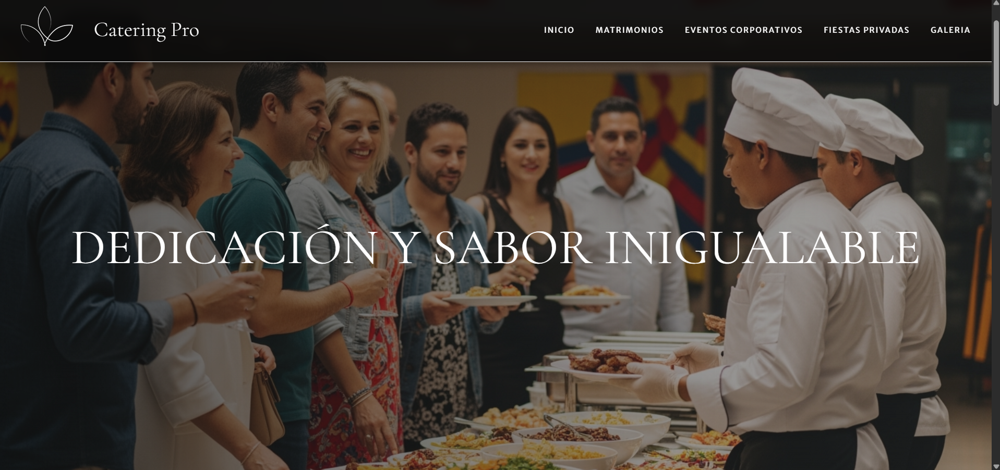
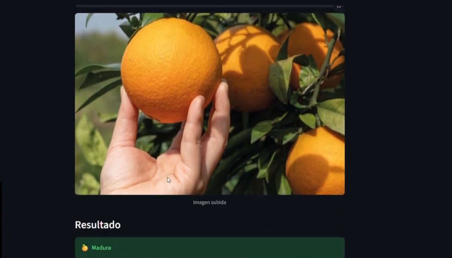
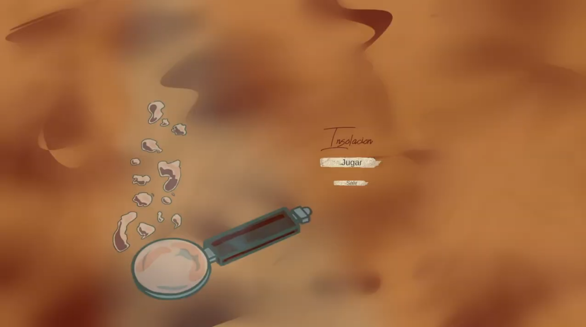

MULTIMEDIA ENGINEER
Building technology that solves real problems through software development, artificial intelligence and data-driven solutions.
Explore My JourneyI am a ninth-semester Multimedia Engineering student passionate about creating technological solutions that solve real-world problems. Throughout my academic projects, I discovered that my professional interests are focused on software development, artificial intelligence, data engineering, and project leadership. I enjoy understanding users' needs, transforming ideas into functional products, and collaborating with multidisciplinary teams to develop innovative solutions. My goal is to continue growing as an engineer capable of leading technology projects from concept to implementation.

Website developed for a real catering company specializing in weddings and events. It includes an interactive menu, event gallery, quotation request form, and an administrative panel connected to a database for managing customer inquiries.
Mobile application designed to help people with diabetes discover healthy restaurants and meals in Bogotá. The app includes restaurant recommendations, nutritional information and a community section.

Research project focused on the automatic classification of orange ripeness using computer vision and machine learning. The project was presented at a research conference after evaluating multiple classification models.

Interactive detective gameplay created by integrating 3D animations into Unity. My role focused on gameplay programming, camera movement, player interaction and technical integration.
Thank you for visiting my portfolio. If you'd like to get in touch, you can reach me through any of the following channels.
Est.lyn.quitian@unimilitar.edu.co
lyqtjs2@gmail.com
+57 323 244 6525